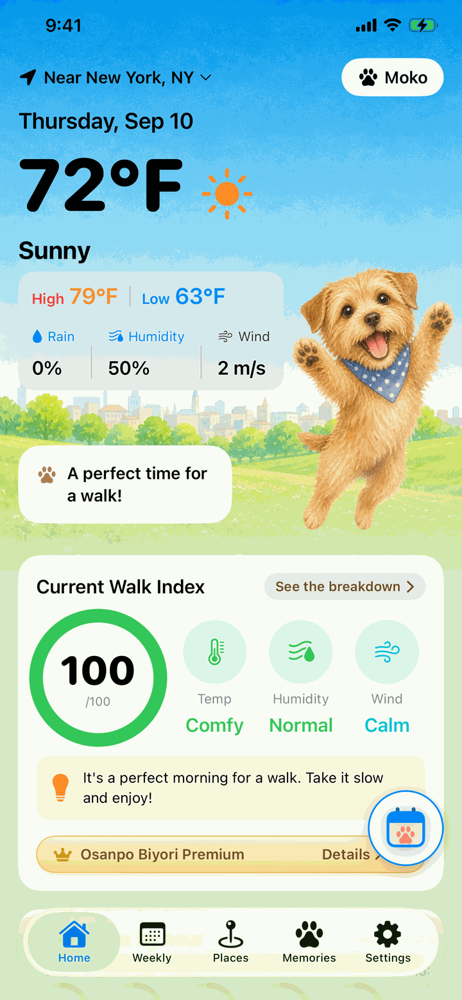
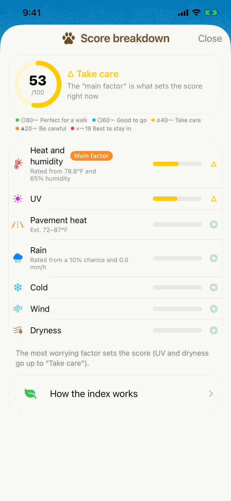
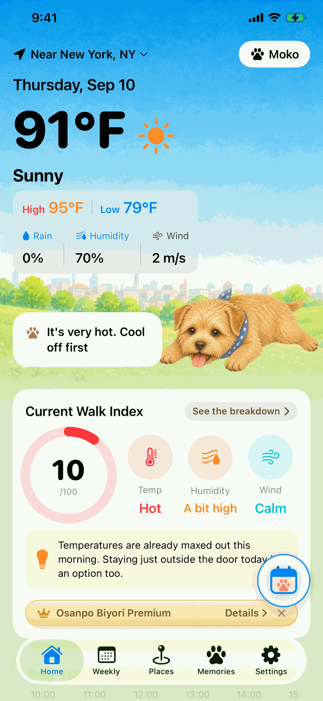
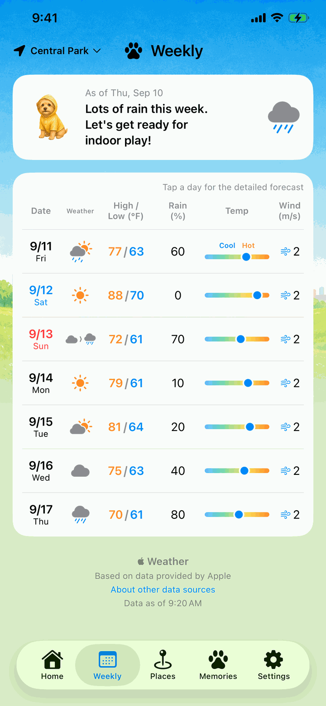
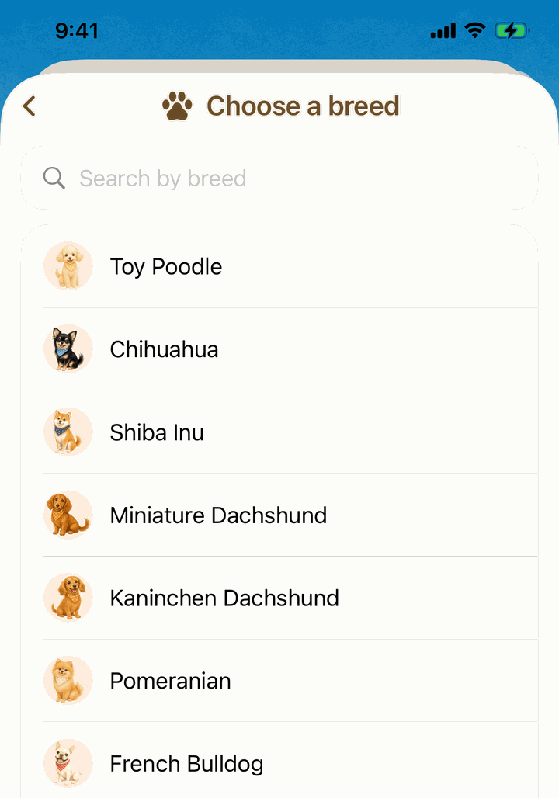
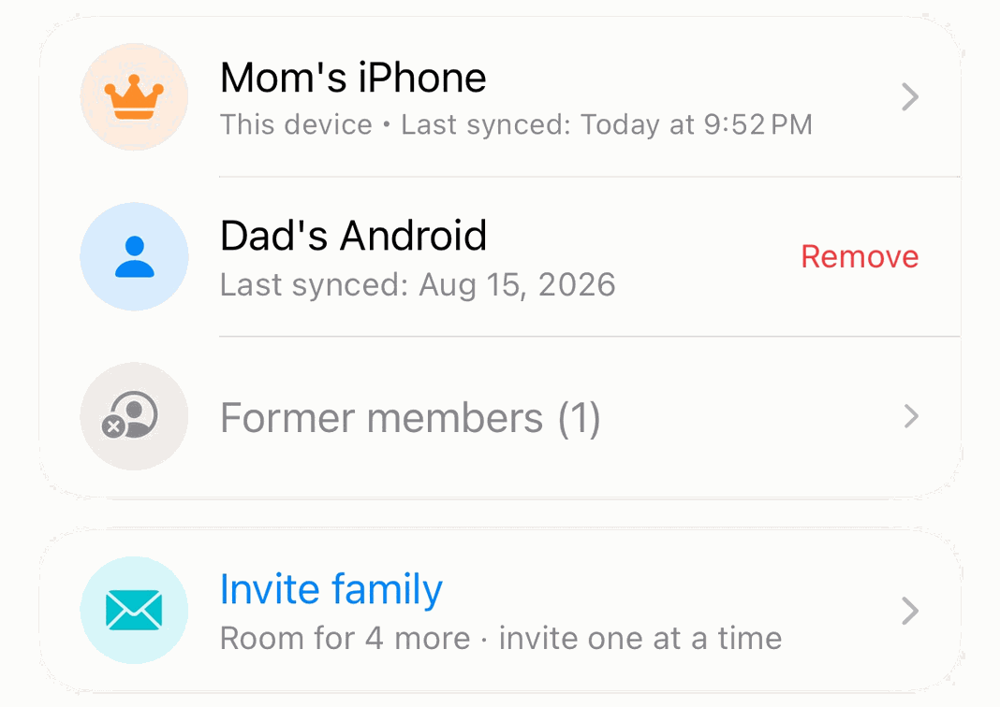
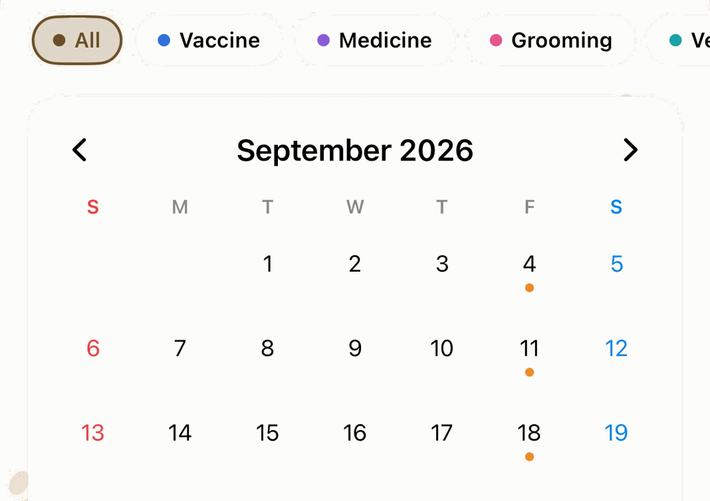
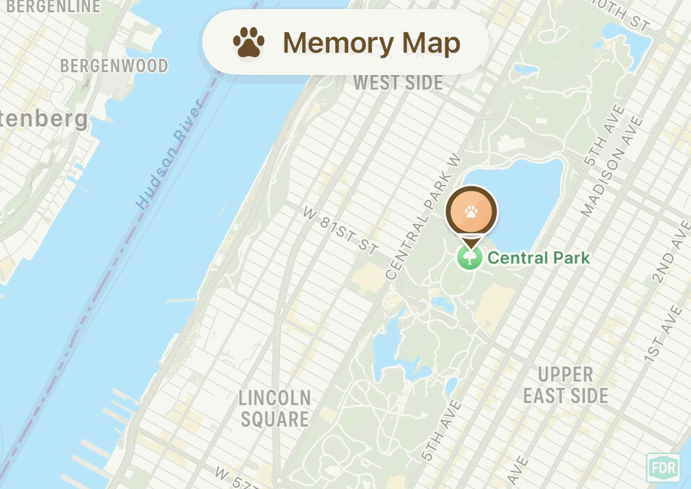

When should we head out for a walk today?
The forecast from your dog's point of view.
Osanpo Biyori
No ads. Core features are free.


A lovely day for you. A hot one underfoot for them.
Osanpo Biyori looks past the temperature. Pavement heat, humidity, wind and UV all go into one answer to “Is it okay to go out now?”, ready for you every morning.

Today's Walk Index
Temperature, humidity, rain, wind and pavement heat add up to one score from 0 to 100 for how good a walk would be right now. You also get an hourly index and a suggested walk time, so one look in the morning is enough to plan the day. Temperatures show in ℃ or ℉, following your phone's settings.

Why that score? We show our work
See the score broken down into seven factors: heat, pavement, rain, cold, wind, UV and dryness. The reasoning and the sources are in the app too, so you can check them for yourself instead of taking our word for it.

Hot pavement and heatstroke risk
Osanpo Biyori estimates how hot the asphalt gets from the height of the sun, the clouds and the rain, and tells you which hours may be hard on paw pads. Heatstroke risk follows the heat index bands of Japan's Ministry of the Environment, and flat-faced breeds, puppies and seniors are judged more cautiously.

The week ahead, at a glance
See the next seven days with highs and lows, the chance of rain and the wind, so you can plan walks and days out ahead of time. Save a dog park or a trip destination as a place, and check its weather from your dog's point of view too.

Tuned to your dog
Register your dog's breed, age and build, and every rating adjusts to them. 120 breeds are supported, and you can add as many dogs as you have.

Same weather, a different answer for each dog.
Dogs with short muzzles can't shed heat easily. Small dogs close to the ground take the full heat coming off the pavement. A thick double coat and a short coat that feels the cold make for very different comfortable days. Osanpo Biyori builds those differences into every answer.

Osanpo Biyori Premium
The core features stay free. For a little more help, Premium adds these four.
-
Family sharing

Keep your pup's records in one place for the whole family
Sync weight, care logs and the Memory Map with your family's devices. Just send an invite code, iPhone or Android. One subscription is enough: invited family members (up to 5 devices) join free and can use Calendar and Memory Map too.
-
Calendar

Your pup's plans, on the calendar your way
Add whatever your dog needs, from grooming and vet visits to heartworm prevention, and keep a record of each with photos and notes. Vaccination and flea and tick plans are free even without Premium.
-
Memory Map

Keep walk memories on the map, with photos
Pin a photo and a note to the places you've walked together. The more pins you add, the more your time together turns into a map. You can try up to 3 for free.
-
Daily backgrounds

Ten photos and many pups, taking turns on Home
The free version always shows the same photo. With Premium, finding out who's on Home today becomes a little treat every morning.
US$1.99/month in the U.S.Prices vary by country or region and are shown before you buy. Available on iOS and Android.
Family members can use Calendar and Memory Map while the device that started sharing is subscribed to Premium. In Japan, Premium also includes real-time alerts and a 15-hour rain forecast with thunder radar. Daily backgrounds feature the breeds we have illustrations for. For payment and cancellation terms, see the Japanese Act on Specified Commercial Transactions notice (in Japanese).
Easy to trust
- No ads
- The core features are free. Premium is optional
- No account needed
- Your dogs' info and saved places stay on your phone (except when you use Family sharing or real-time alerts. See the Privacy Policy)
- Location is used only to get the weather
- Every feature works without location access, once you save a place
- The reasoning and sources behind every index are in the app

Frequently asked questions
Can I use the app without allowing location access?
Yes. Register a location from the location menu on the Home screen and you can use every feature.
Is the pavement temperature an actual measurement?
No. It's an estimated guide based on the height of the sun and the cloud cover. Before you head out, use it together with the 5-second check: place your hand on the ground for five seconds.
Does it work outside Japan?
Yes. Everything works wherever you are, except the rain radar, real-time alerts, weather warnings and observed current temperature. Those use data from the Japan Meteorological Agency and cover locations in Japan only.
Can I keep using the app for free?
Yes. The Walk Index, heatstroke and pavement temperature ratings, the weekly forecast and more are free. The care calendar is free too for plans such as vaccinations and flea and tick prevention. Osanpo Biyori Premium is an optional plan that adds to all of this.
Is Osanpo Biyori Premium available on Android too?
Yes. You can subscribe on either iOS or Android. The core features are free on both.
Does everyone in the family need to subscribe to share?
No. Only the one device that starts Family sharing needs Osanpo Biyori Premium. Family members who join with an invite code (up to 5 devices) join for free, and you can share between iPhone and Android, too.